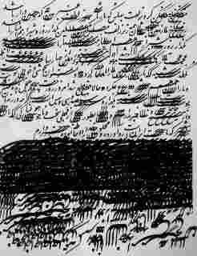
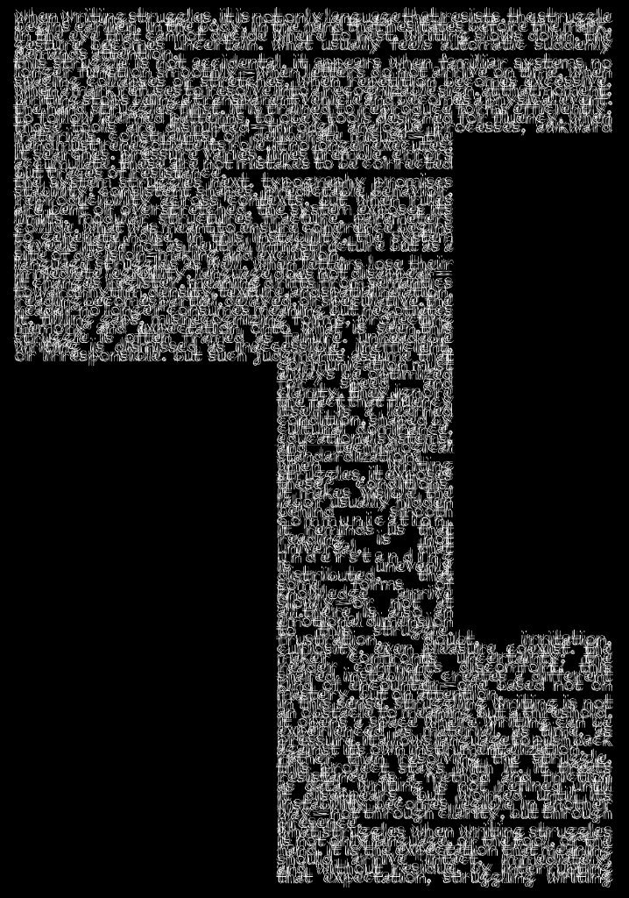
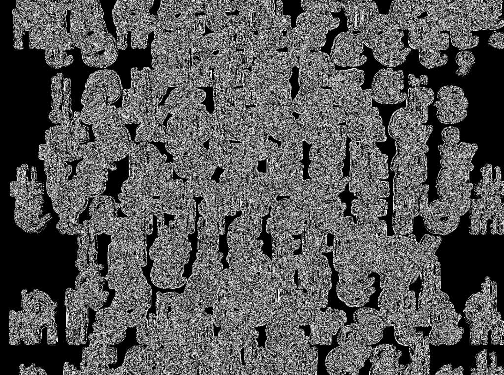
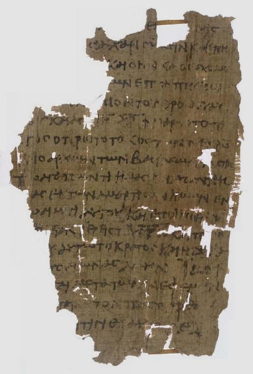

the research document website experimentation
When writing struggles, it is not only language that struggles — the struggle belongs to the entire act of inscription. The marks made on a surface carry within them the history of every previous mark, every prior attempt to hold meaning still long enough to pass it from one mind to another. This is not accidental. It happens when familiar systems no longer feel adequate, when the relation between what one wants to say and what the available language offers becomes a site of visible friction.
Script, in this sense, is never merely transcription. It is always also interpretation, negotiation, and sometimes resistance. The forms letters take — their pressure, their spacing, their relationship to the surrounding white — are decisions that happen faster than consciousness can track. And yet those decisions shape what is received on the other end of reading.
To study form is therefore to study the conditions under which meaning becomes transmissible at all. Not what is said, but how saying was made possible, and what it cost the one who said it.

The Persian manuscript tradition developed an understanding of script as visual form long before Western typography arrived at similar conclusions. The line was never merely linear. It curved back on itself, densified, opened into negative space with the deliberateness of a compositional decision. Reading and seeing were not separated. They were performed simultaneously, each informing the other in a loop that produced meaning neither could generate alone.
What happens when this tradition encounters a modernity that insists on legibility as the primary virtue of text? What is lost in that encounter, and what survives, transformed into something that no longer carries its original name but still carries its original weight?
There is a threshold at which language stops being read and begins to be seen. This threshold is not fixed. It moves depending on the viewer, the context, the density of marks on the surface. But the threshold exists, and crossing it is one of the most productive accidents that can happen in a research process.
When we encounter a page dense enough that individual words become unrecoverable — when the grain of the text overwhelms the grammar — we are forced to engage with language at a different register. We notice the texture of thought rather than its content. We see how much space an idea takes up, how fast or slow its rhythm moves, where it clusters and where it thins.

The image above performs this threshold deliberately. Letters rendered at the edge of legibility, shaped into a form that the eye reads as architecture before it reads as text. The shape contains the argument. You do not need to read every word to understand what the image is claiming about the relationship between written language and visual structure.
This is not a failure of communication. It is a different kind of success — one that operates below the level of parsing, in the register of impression, of felt organization, of bodies moving through space arranged by text.
The question the image poses is simple: if a text can be seen before it is read, and if the seeing already communicates something, then at what point does writing end and image-making begin? And does that distinction matter as much as we have been taught to believe?
Density is not chaos. It is a condition of organization in which the organizing principle has been made so fine-grained that it becomes invisible from a distance. To call something dense is to acknowledge that more is happening than can be immediately parsed — that the work of the eye and the work of the mind will need to slow down, will need to perform multiple passes, before the pattern emerges.
In language, density presents itself as a problem of attention. A dense text demands a different kind of reader than a sparse one. It does not reward skimming. It punishes impatience. It insists on being taken at its own pace, on its own terms, in the time it requires — which is always more time than we think we have.

The image above explores what happens when density reaches the point of saturation — when the accumulation of marks becomes so total that the surface loses its hierarchy, its sense of which elements are figure and which are ground. At this point, the image becomes a field rather than a composition. The eye no longer knows where to begin.
This is interesting precisely because reading, under normal conditions, is a highly directed activity. We enter text at a prescribed point, move through it in a prescribed direction, and exit at a prescribed end. Dense, field-like images suspend all of these conventions. They require the viewer to construct their own path, their own entry, their own duration.
What they offer in return is a different kind of knowledge — slower, more embodied, less translatable into summary, more resistant to reduction. Dense work does not want to be paraphrased. It wants to be inhabited.
Structure is the argument made visible through arrangement. Before a single sentence is read, the structure of a text makes claims about how thought is organized, what it values, and what it treats as peripheral. A text that centers everything equally is making a structural argument as much as a text with a rigid hierarchy. The absence of hierarchy is itself a structural decision.
The notation below began as an attempt to diagram the relationship between the different sections of this research — to see, on a single page, how the parts related to each other in terms of weight, sequence, and dependency. What emerged was something less like a map and more like a score: a set of instructions for moving through a territory that can only be known by moving through it.
The lines in the notation do not represent connections in any simple sense. They are traces of attention — marks left behind by a mind trying to hold multiple things in relation simultaneously. When we look at a structural diagram, we are not looking at structure. We are looking at the residue of a structural attempt.
This distinction matters because it shifts responsibility. The structure is not in the diagram. The structure is in the process that produced the diagram and in the process that reads it. The diagram is evidence, not architecture. It points toward a building that exists only while someone is inside it, thinking.
Structure is not what holds a text together. Structure is what allows a text to fall apart in a controlled way — to release meaning incrementally, at the right pace, in the right sequence, to a reader who is ready to receive it. Without structure, meaning arrives all at once and overwhelms. Without meaning, structure becomes mere formalism — a container with nothing inside.
Memory and text have always had an ambivalent relationship. Writing was invented, among other things, as a technology for offloading memory — for storing outside the body what the body could not reliably hold. But the moment memory is externalized, it changes. It becomes fixed in a way that living memory is not. It loses the capacity to revise itself quietly, to shift emphasis without announcing the shift, to forget what should be forgotten.
A written text remembers everything it was told to remember. It cannot learn from subsequent experience. It cannot update. It sits in time like a photograph — accurate to the moment of its making and increasingly alien to every moment that follows.
And yet we return to old texts. We read them as though they still speak to us — and sometimes they do. How does something so fixed remain so alive? Perhaps the text does not speak. Perhaps we speak through it, using its fixed structure as a frame within which our own changing understanding performs itself. We do not read the same book twice. We read the same words twice, and bring different readers to them each time.
Memory, in this sense, is less about storage and more about retrieval. What we find when we go back to a text depends entirely on what we bring to the search. The text is an occasion for memory more than it is memory itself. It is a prompt, an anchor, a surface against which recollection organizes itself into something that feels like meaning.
The research document that forgets this — that treats its sources as fixed containers of stable meaning rather than as occasions for renewed interpretation — will produce conclusions that feel certain and are, precisely because of that certainty, untrustworthy. The best research remembers that it is remembering, and marks that act of remembering as part of its own argument.
To notate is to compress. A notational system is always a trade — something gained in portability and precision is always lost in the fullness of what was being notated. Musical notation captures pitch and rhythm and relative duration but cannot capture the specific warmth of a particular player's tone on a particular evening. Choreographic notation captures sequence and spatial position but cannot capture the quality of attention a dancer brings to a movement.
The question is not whether notation is impoverished — it always is. The question is whether the impoverishment is productive. Does reducing the phenomenon to its notatable features allow for operations that would be impossible with the full phenomenon? Does writing a score make possible a kind of compositional thinking that could not occur without the score?
Research notation — the systems we develop for marking up sources, tracking connections, flagging uncertainties — is subject to the same conditions. Every notation system privileges certain features of the material it marks and suppresses others. The choice of what to note is never neutral. It encodes a theory of what matters.
When we look back at our own research notes, we are not looking at the material. We are looking at the theory we had about the material at the moment of noting. That theory has usually changed by the time we look back. The notes remain, but their meaning is different from what it was.
This is why the most useful research notebooks are not the most comprehensive ones. They are the ones that leave enough space — in the margins, between entries, in the gaps and silences — for the later reader to insert their own revisions. A notebook that is too complete forecloses the conversation. A notebook that is too sparse cannot hold it open. The ideal is somewhere between the two, in the productive zone where notation ends and interpretation begins.
Repetition is not saying the same thing twice. It is the act of returning to something that has changed in your absence, and finding out what has changed, and what in yourself has changed with it. To repeat is to test the stability of meaning — to press on it again and again until either the meaning holds or your pressure produces a crack through which something new can enter.
In research, repetition is undervalued. We speak of findings as though they appear once and remain permanently available. We cite sources as though consulting them once is sufficient to understand them. We revisit our own earlier work, if at all, only to correct or build upon it — not to discover how it has become strange.
But meaning is not stable. The sentence you wrote six months ago is not the same sentence now. The argument you found convincing at the beginning of a project is rarely the argument you would make at its end. Something happens in the interval. The material works on you as you work on it.
This chapter is an argument for intentional repetition as a research method. Not the unconscious repetition that happens when we have not read widely enough, nor the strategic repetition of emphasis that rhetoric recommends — but the deliberate act of returning to the same material, the same question, the same image, with the explicit intention of finding it different. To ask not "what does this mean?" but "what does this mean now, to this particular version of me, in this moment of the project?"
The answer will always be different from the last time. And the difference, accumulated across many returns, is the record of the research — not the conclusions the research reached, but the process by which a mind learned to inhabit a question more fully over time.
What survives is never what was most important at the time. Survival is a function of material durability, storage conditions, institutional decisions, and accident — not of cultural value. The texts we call ancient are the texts that happened to be written on materials that happened to be preserved in conditions that happened to remain stable long enough for us to find them. Everything else is gone.
This should make us humble about the texts we have. The papyrus fragment, the clay tablet, the parchment codex — these are not windows into the past. They are the past's survivors, which is a very different thing. A survivor is not representative. A survivor is what was tough enough, or lucky enough, or sufficiently embedded in the interests of those with storage space, to outlast everything else.

The manuscript shown here is a fragment. We do not know what surrounded it, what came before, what followed. We know only what the material itself preserved, which is some portion of a text that was itself some portion of a larger intellectual project that is now otherwise unrecoverable. We read the fragment as though it were complete because we have no choice. We do not have the rest.
Reading fragments requires a particular kind of imaginative generosity — a willingness to let the gap be part of the meaning, to treat the silence surrounding the text as itself informative rather than merely absent. The fragment teaches us to read with what is not there as much as with what is.
This is a skill that transfers to contemporary research. Every text is, in a sense, a fragment. Every argument assumes more than it states. Every conclusion leaves open the questions it did not know to ask. The reader who can sense the edges of the known, the shape of the unsaid, is reading at a depth that comprehension alone cannot reach.
Silence in a text is not the absence of language. It is a different kind of language — one that works through withholding, through the management of expectation and its non-fulfillment, through the space left for the reader to complete what the writer did not finish. Silence requires as much craft as speech. More, perhaps, because it is easier to fill space than to leave it productively empty.
The white space on this page is not neutral. It is a decision. Every margin, every paragraph break, every moment where the text stops and the eye lifts from the surface — these are structured silences, designed to do specific work in the reading experience. They create rhythm. They mark transitions. They allow the previous sentence to settle before the next one arrives.
Research that has learned to use silence understands that not everything it knows needs to be said. Some of what it knows is better communicated by implication — by the structure of what is said around it, by the questions it raises without answering, by the material it places beside other material without explaining the relationship. The reader who is invited to make a connection they were not handed will hold that connection more firmly than the reader who was simply told what to think.
Silence, in this sense, is a form of trust. It trusts the reader to be present, to be attentive, to bring something to the encounter. A text that explains everything trusts no one. It is a text that cannot let go — that keeps speaking past the point where speaking helps, past the moment when silence would have done more.
The most important thing this research has tried to learn is when to stop. Not when the material is exhausted — it never is — but when more words would damage rather than deepen. When the argument has reached the point at which continuing to argue would be its own kind of mistake.
Every sustained research project reaches a moment that can only be described as collapse — not failure, but the necessary dissolution of the framework that made the research possible in the first place. The categories that allowed you to sort material stop sorting cleanly. The questions that felt productive begin to feel inadequate. The argument you have been building reveals a flaw that undermines not just the conclusion but the methodology that produced it.
This is the most uncomfortable moment in research. It is also, in retrospect, the most productive one. Because what comes after collapse is not nothing. What comes after collapse is a different kind of order — one that could not have been reached by any route other than the one that passed through dissolution.
The willingness to let a framework collapse — to resist the temptation to prop it up with auxiliary arguments and special pleading — is one of the rarest and most valuable capacities a researcher can develop. It requires a particular kind of courage: not the courage to defend a position but the courage to abandon one that is no longer tenable, even when abandoning it means losing work, losing time, losing the certainty that made the work feel possible.
What survives collapse is not nothing. Some of the work remains useful. Some of the material retains its interest. Some of the questions, though they turned out not to be answerable in the way originally hoped, point toward questions that are. The collapse is not the end of the research. It is the moment the research becomes honest.
This document is itself a record of several collapses — moments where what seemed like progress turned out to be elaboration, where what seemed like conclusions turned out to be questions in disguise. We have tried to leave traces of those moments in the structure of the document itself: in the places where the argument does not resolve cleanly, in the questions that are raised without being answered, in the images placed beside text without explanation, in the silences that ask more than any sentence could. If you have read this far, you have participated in the research. What you have made of it is yours. What we have made of it is what you see here — incomplete, partial, and offered in that spirit.